“We believe in the beauty of time, natural textures, and the unique soul imbued into every hand-stitched piece.”
01 / heirloom rag dolls & art sculptures
8 items
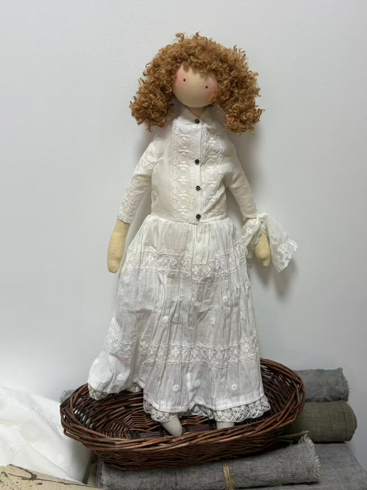
heirloom rag doll
Victorian Heirloom Lace Doll
白纱微褶维多利亚复古布偶姑娘。精选纯棉白纱衬裙、手工复古蕾丝花边、卷曲莫海羊毛发丝与精致手绘面部表情。
纯手工缝制 · 活动关节 · 复古层叠微缩着装
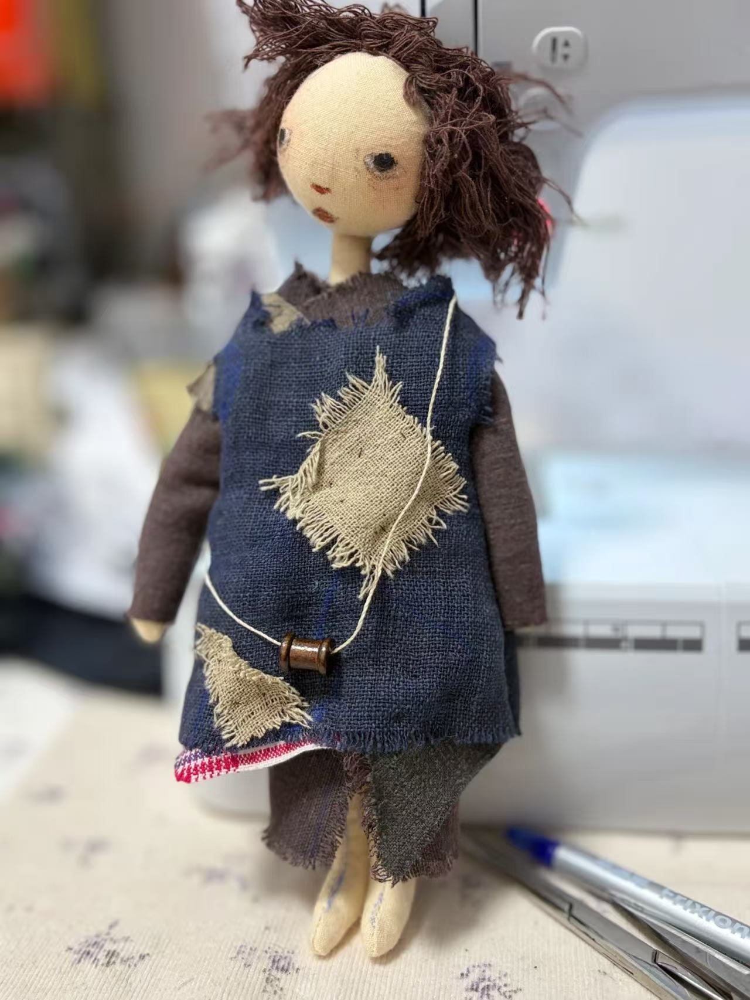
artisan doll
Indigo Patchwork Studio Doll
工坊蓝染破洞补丁艺术布偶。天然蓝染粗亚麻毛边罩衫、野性毛线发型、手作原木桶珠项饰与立体捏塑面孔。
Boro 拼布毛边 · 独立打样 · JUKI工坊精制
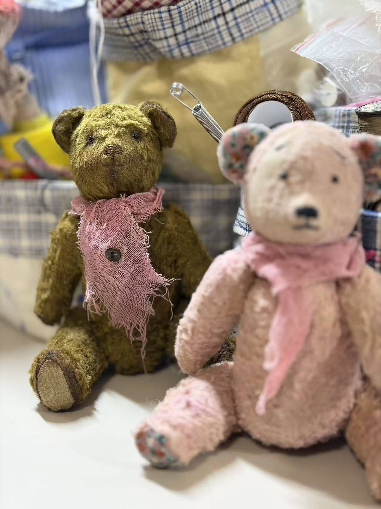
jointed teddy bear
Vintage Mohair Jointed Bears
复古莫海毛手作五关节泰迪熊双人组。苔藓绿与樱花粉高密莫海毛、天然草木染粉色毛边围巾与纽扣配饰。
经典五关节可动 · 草木染织物配饰 · 手工刺绣
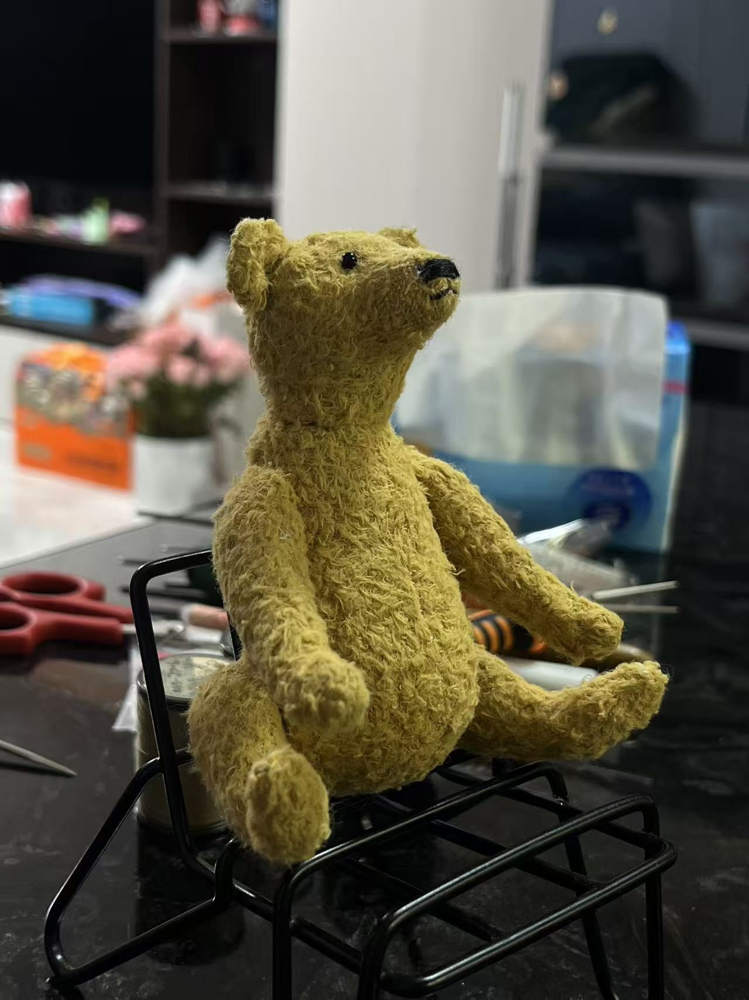
jointed bear
Golden Olive Mohair Bear
金榄绿复古莫海毛小熊。饱满弧度剪裁版型、黑亮玻璃眼珠与纯手工手缝封口细节。
天然莫海毛 · 立体手工打板 · 治愈系摆件
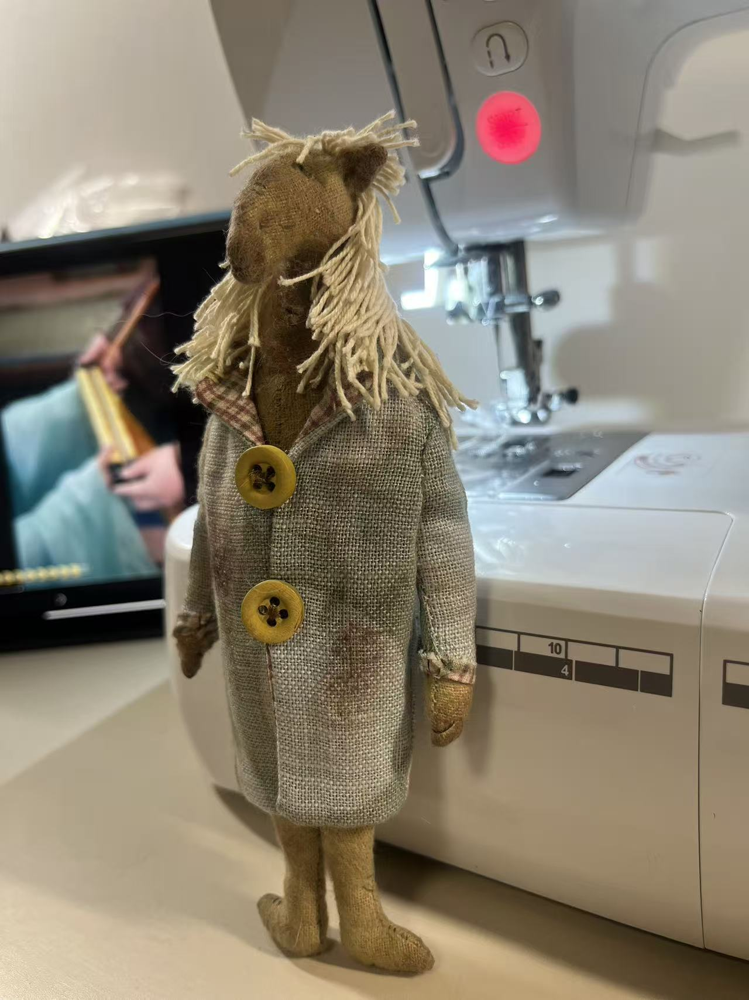
art sculpture
Primitive Creature in Tweed Coat
粗花呢大衣原始感手作艺术偶。身着格纹内衬羊毛粗花呢风衣、黄色木质大纽扣与微缩翻领。
复古微缩裁缝 · 亚麻软雕塑 · 手作毛线鬃毛
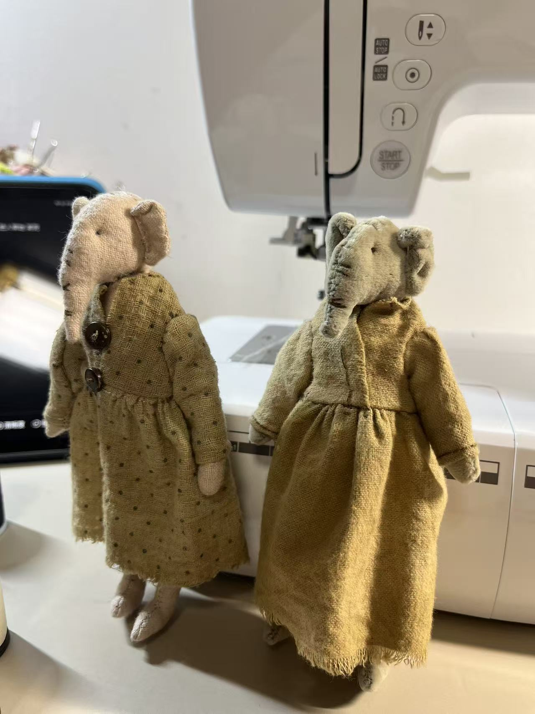
soft sculpture
Handcrafted Linen Elephant Pair
纯手工亚麻复古小象双人组。身着质感芥末黄与波点收腰复古连衣裙、毛边下摆与天然木质纽扣。
天然未漂白亚麻 · 复古褶皱收腰裙 · 灵感手作
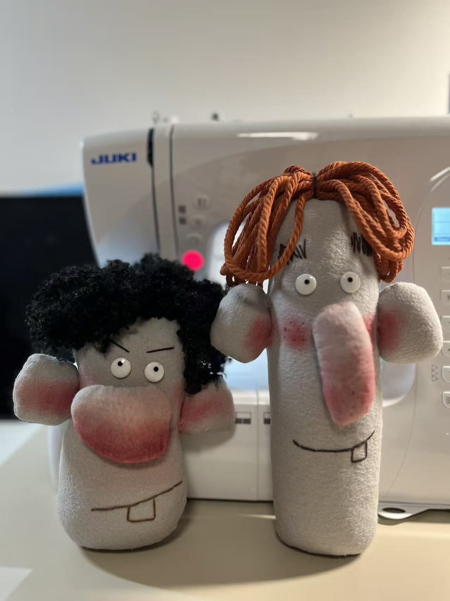
character doll
Whimsical Expression Figures
幽默治愈系搞怪手作布偶。立体大鼻子腮红晕染、毛线发型、手工刺绣诙谐表情与纽扣眼睛。
俄式手作灵感 · 趣味雕塑感 · 纯棉亲肤填充
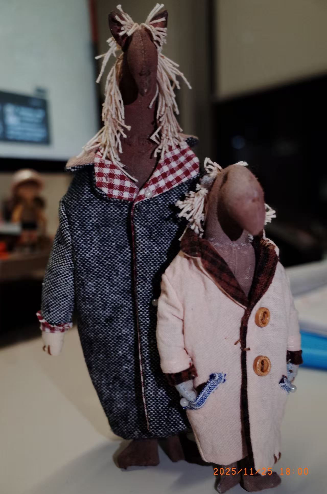
heirloom figure
Tailored Equine Art Sculptures
大衣绅士与淑女马形软雕塑。身着人字纹精纺毛呢长风衣、红白格翻领与微缩刺绣手部细节。
高级定制微缩风衣 · 复古原木纽扣 · 收藏级艺术品
02 / studio bags & artisan pouches
7 items
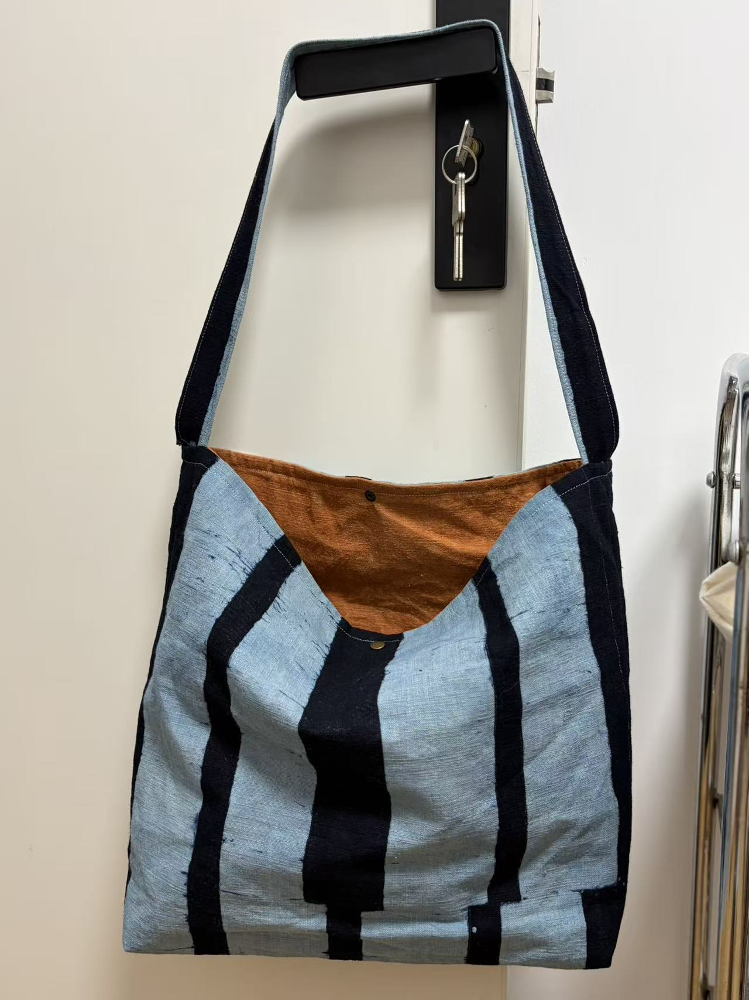
everyday bag
Indigo Stripe Linen Hobo Tote
蓝染条纹亚麻极简单肩挎包。水洗天蓝条纹粗亚麻布面、拼接收口内衬、复古柿涩茶褐全里布与按扣闭合。
天然植物水洗色 · 宽肩带受力加固 · 双层内衬
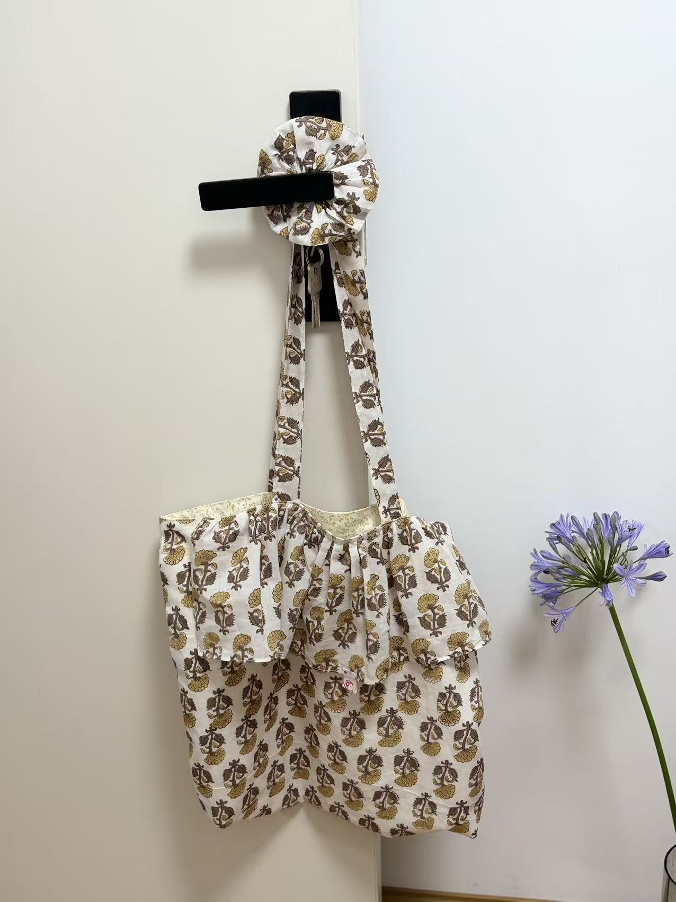
botanical tote
Botanical Floral Ruffle Tote Set
草木植物印花荷叶边托特包与大肠发圈套组。法式复古木刻印花棉麻、双层微褶荷叶边领口与同系列发圈。
印花纯棉麻 · 荷叶边立体捏褶 · 配套发圈套组
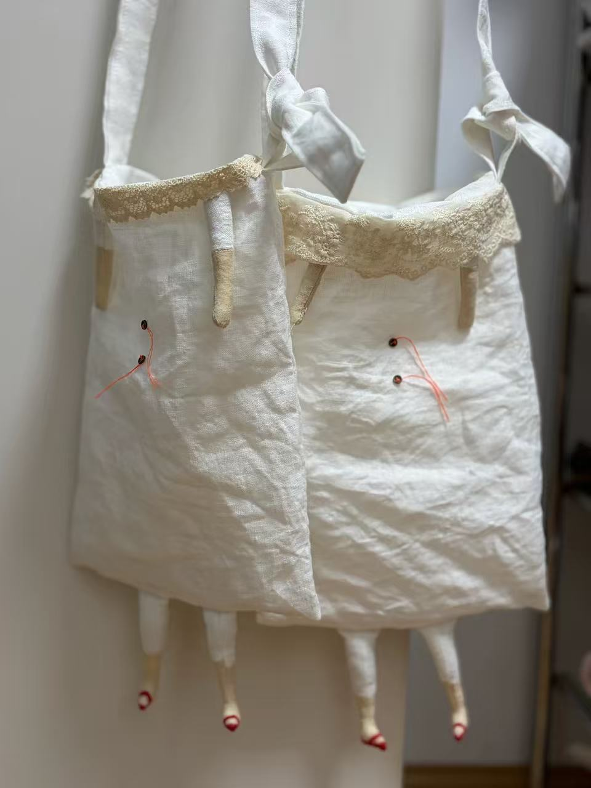
playful linen bag
Heirloom Doll-Leg Linen Totes
趣味玩偶双腿白亚麻斜挎包。纯净未漂白天然亚麻、镂空花边领圈、手工刺绣表情与俏皮下垂偶腿。
原创玩偶结合构思 · 纯手作打样 · 蝴蝶结系带肩带
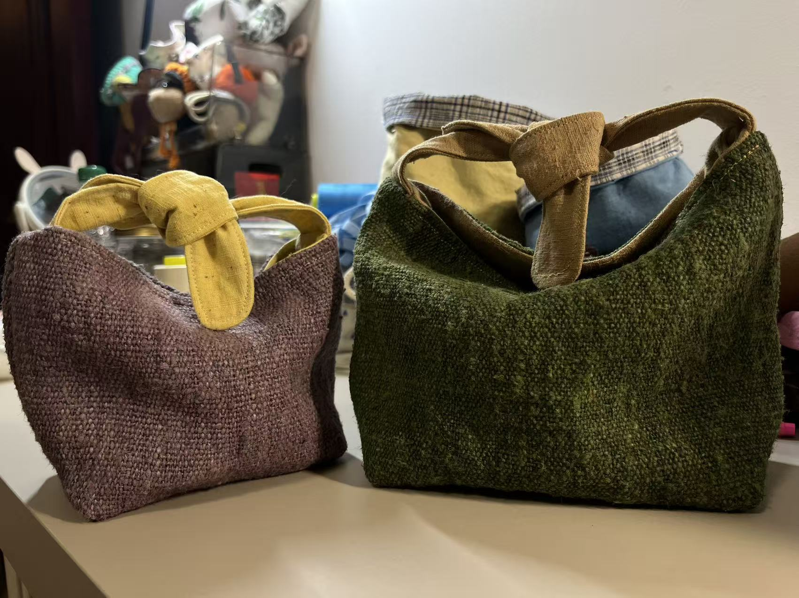
knot bag
Coarse Woven Knot Bento Bags
粗织手感便当结扣手提包。苔藓深绿与枯紫粗粝肌理手织面料、撞色卡其亚麻结扣手柄与加厚内衬结构。
粗织厚重肌理 · 日式结扣穿孔提手 · 挺括立体
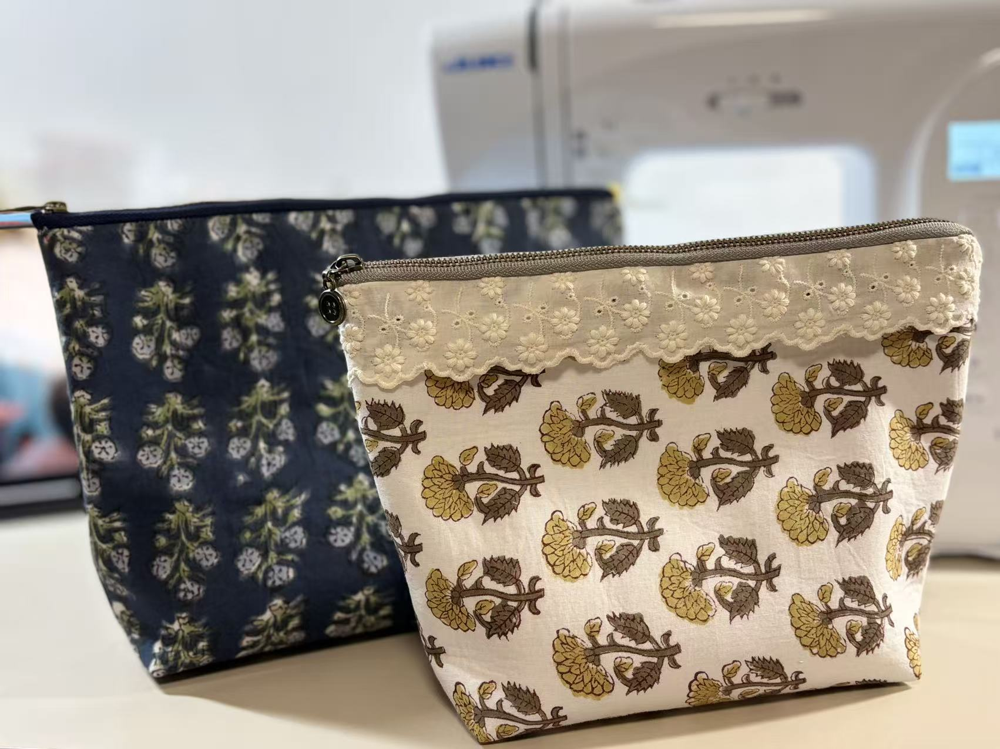
zipper pouch
Botanical Floral Lace Pouches
复古草木印花蕾丝化妆/收纳包。藏青与暖白底植物花卉印花、精致刺绣蕾丝花边贴布与复古金属拉链。
高密内衬包边 · 复古拉链拉头 · 随身美学收纳
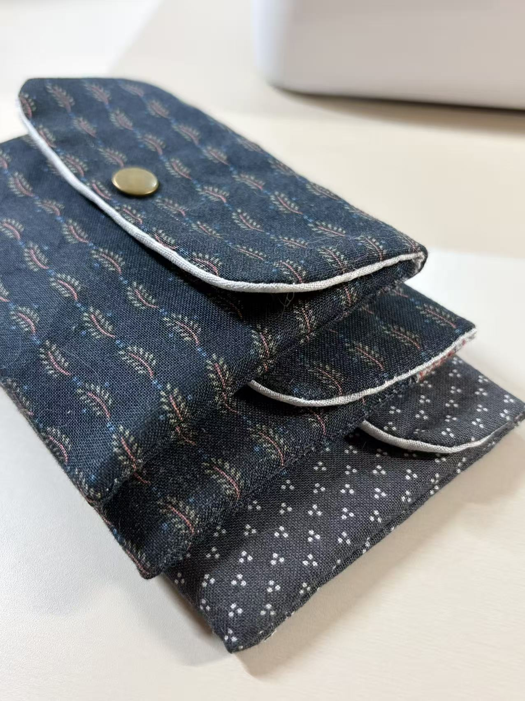
pocket sleeve
Indigo Kasuri Envelope Sleeves
日式蓝染织布信封式眼镜/卡片收纳包。细密包边条勾勒、复古做旧黄铜四合扣与多层柔软夹棉防震防护。
传统蓝染提花织布 · 精细滚边工艺 · 黄铜按扣
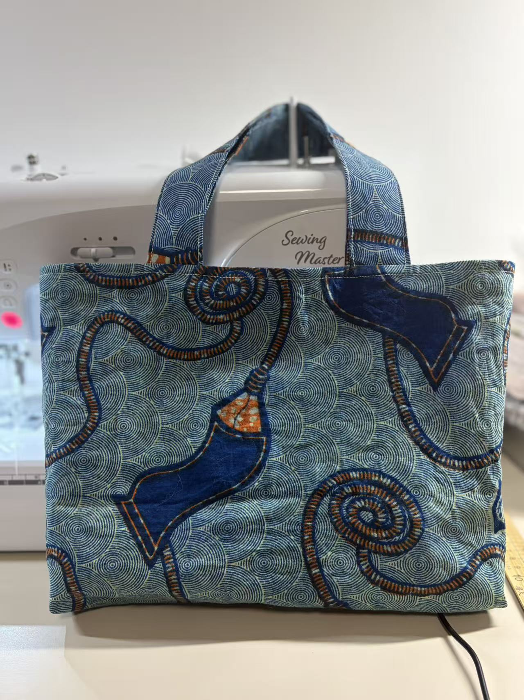
structured tote
Spiral Batik Structured Tote
几何漩涡图腾蜡染手提包。深蓝与浅蓝同心圆蜡染帆布面料、夹棉挺括手感与舒适加宽手提带。
几何蜡染图腾 · 夹棉绗缝加固 · 极佳承重
03 / pet pieces, bandanas & living textiles
7 items
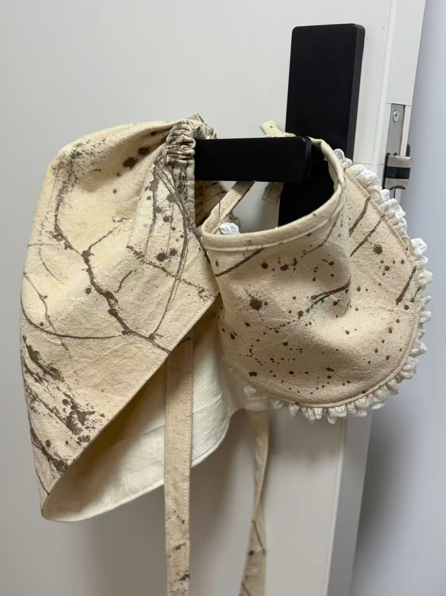
bandana & bib
Botanical Splatter Bandana & Bib
核桃皮/植物墨彩泼墨肌理三角头巾与花边口水巾。天然棉麻原色底布、不规则自然水墨甩点与蕾丝滚边。
植物原汁染色 · 松紧褶皱绑带 · A类母婴亲肤
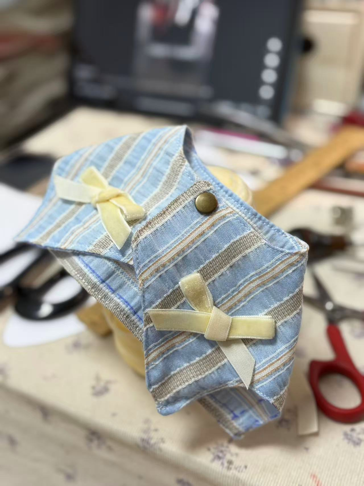
pet cape
Sky Stripe Linen Pet Cape
浅天蓝条纹棉麻复古宠物领结披肩。鹅黄丝绒蝴蝶结丝带装饰、做旧黄铜按扣与宠物人体工学无压弧线。
轻盈透气棉麻 · 丝绒微缩蝴蝶结 · 防勒舒适合体
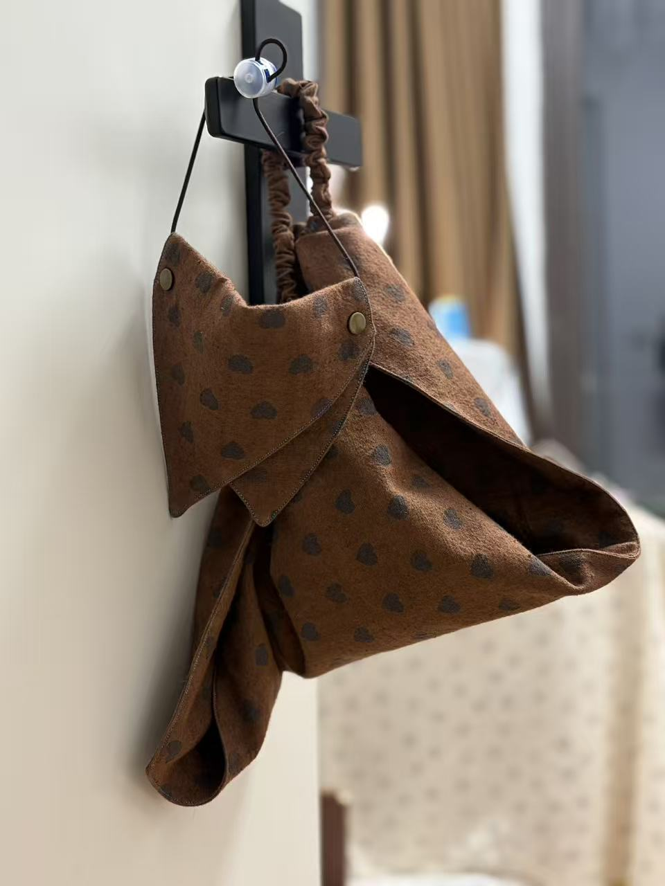
headwear
Walnut Heart Jacquard Bandana
暖茶褐爱心暗提花三角发带头巾。焦糖暖褐草木色调、后置弹力松紧包边带与做旧黄铜扣点缀。
草木色谱提取 · 柔韧贴合头型 · 舒适松紧带
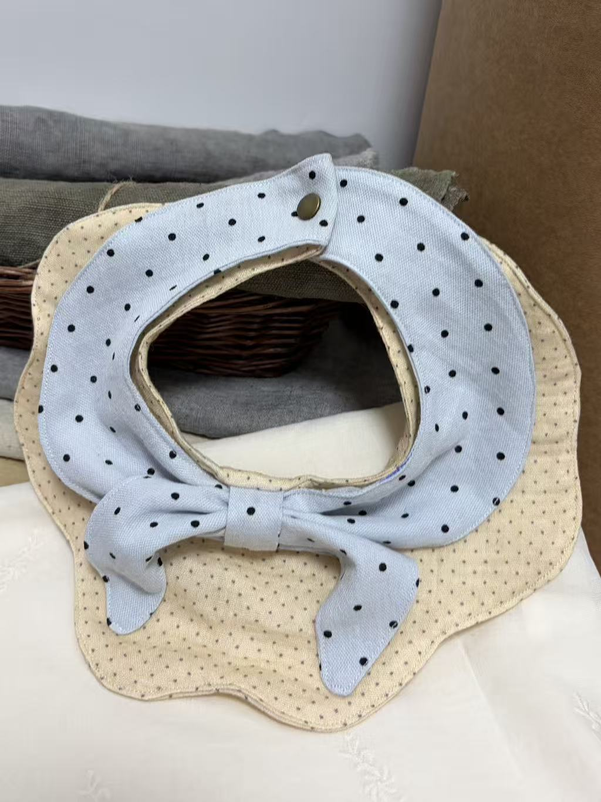
reversible collar
Polka-Dot Scalloped Petal Collar
双层花瓣波点领结小围嘴。水蓝波点与米黄细点双层波浪花瓣边造型、立体绑带蝴蝶结与按扣闭合。
双面可戴设计 · 波浪花瓣造型 · 双层纯棉
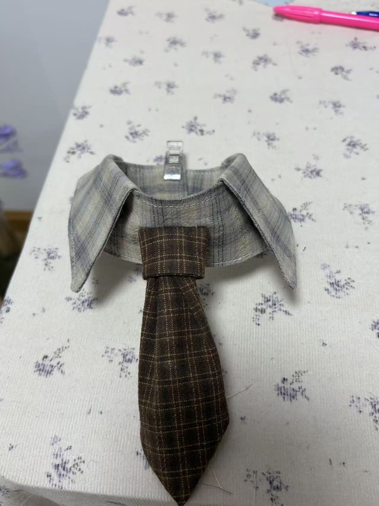
miniature tailoring
Gentleman Plaid Collar & Micro-Tie
微缩复古绅士格纹衬衫领与领带套件。灰色细格纹衬衫立翻领、深棕千鸟格微缩手缝打结领带。
极高难度微缩裁缝 · 偶用与宠物两相宜
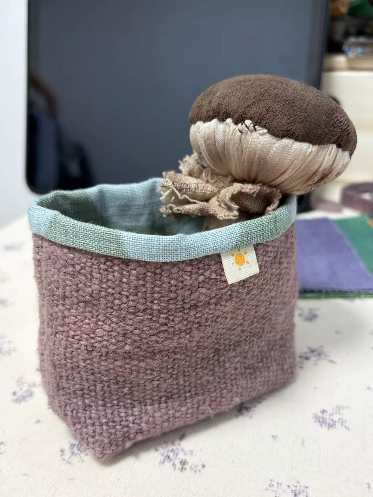
living soft sculpture
Forest Mushroom Sculpture & Woven Tub
手作森林蘑菇软雕塑与粗织收纳布筒。枯粉紫粗纺羊毛收纳桶、薄荷绿包边与麂皮/亚麻拼接森林蘑菇摆件。
粗织羊毛面料 · 亚麻蘑菇褶皱捏褶 · 桌面美学
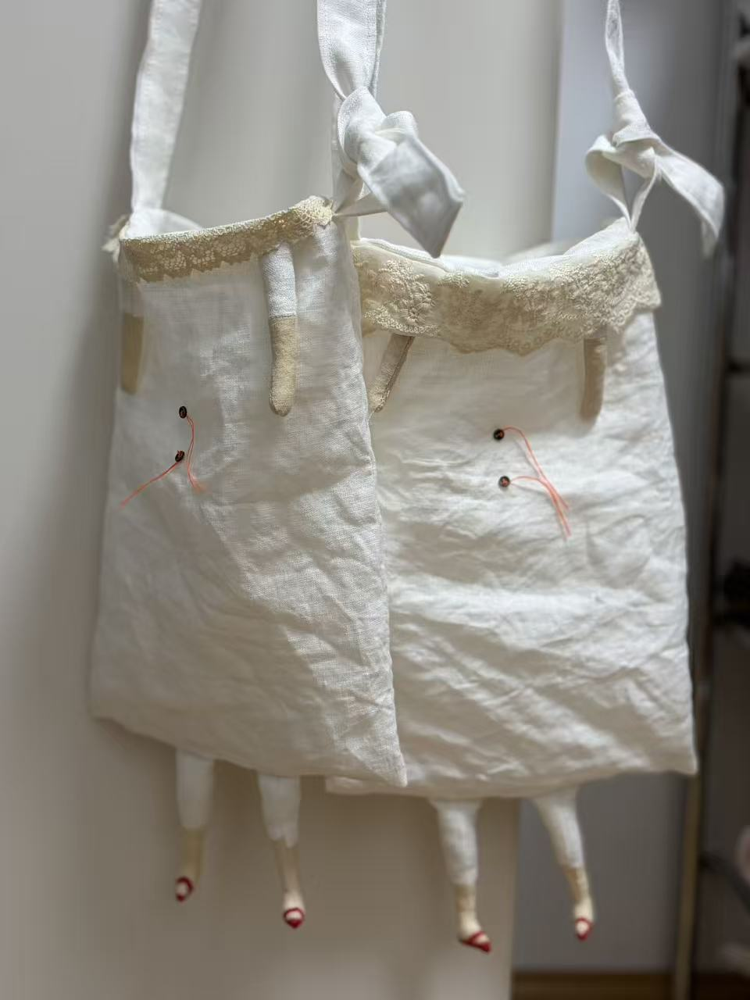
craftsmanship detail
Heirloom Linen Tote Macro Detail
白亚麻布包细节微距。展示古董蕾丝滚边细节、手工刺绣红线腮红点与纯棉绳偶腿收口。
微距细节展示 · 纯天然亚麻织纹 · 精工锁边